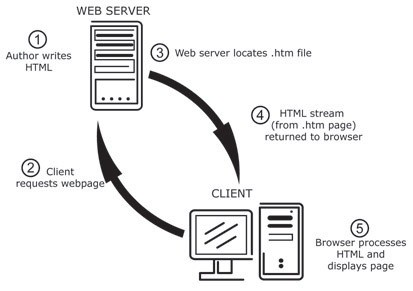

Webtechnology
Chapter 6 – Introduction to PHP
Overview
Static web pages
- Only changes when the web developer changes it. Static web pages don't change in response to user input.
- No processing is done on server-side. Web server fetches the page from storage and sends the page directly to client browser.
Static web pages

Dynamic web pages
- A dynamic web page is a page that's created by a program or script running on a server.
- Web server uses extension of requested page to determine which program should process the request.
- This allows the web page to change with every request.
- Changes can come from user submitted data, from a database, ....
Dynamic web pages
- A client browser does not distinguish between dynamically generated HTML and HTML from a static web page. The browser simply displays the HTML it receives from the server.
- Dynamic web pages allow us to build interactive web applications.
Dynamic web pages

Popular server-side languages
- JSP
- JavaServer Pages
- Work with servlets written in Java. Requires an application server such as the Tomcat server.
- Extension: ".jsp"
- ASP.NET
- Active Server Pages
- Used with the Microsoft IIS server. Work with server-side code written in C# or Visual Basic.
- Extension: ".aspx"
Popular server-side languages
- Perl
- Originally developed for use with UNIX. Used for text manipulation scripts. Later used to build web applications.
- Extension: ".pl"
- Python
- Used to developed many types of applications. Typically used with Apache.
- Extension: ".py"
Popular server-side languages
- PHP
- PHP: Hypertext Preprocessor.
- Can be used with Apache and IIS web servers.
- Extension: .php
PHP history
- 1995: PHP 2
- Personal Home Page
- 1998: PHP 3
- Renamed to "PHP: Hypertext Preprocessor"
PHP history
- 2000: PHP 4
- Introduced the Zend Engine (the open source scripting engine that interprets the PHP programming language)
- 2004: PHP 5
- Zend Engine II
- Improved support for OOP
- PHP Data Objects (PDO) extension
- 19-Sep-2013: PHP 5.5.4
Why PHP is popular
- PHP runs on different platforms (Windows, Linux, Unix, etc.).
- PHP is compatible with almost all servers used today (Apache, IIS, etc.).
- PHP supports many databases (MySQL, Informix, Oracle, Sybase, Solid, PostgreSQL, Generic ODBC, etc.).
- PHP is FREE to download from the official PHP resource: www.php.net
- PHP is easy to learn and runs efficiently on the server side.
First PHP application
<!DOCTYPE html>
<html lang="en">
<head>
<meta charset="utf-8" />
<title>Exciting world of PHP</title>
</head>
<body>
<h1>Hello world</h1>
<?php
// Output paragraph
echo "<p>Welcome to the exciting world of PHP.</p>";
?>
</body>
</html>
First PHP application
- PHP generates its output server side.
- What the browser gets is the following:
<!DOCTYPE html>
<html lang="en">
<head>
<meta charset="utf-8" />
<title>Exciting world of PHP</title>
</head>
<body>
<h1>Hello world</h1>
<p>Welcome to the exciting world of PHP.</p> </body>
</html>
First PHP application
- PHP files can contain text, HTML tags and scripts statements.
- PHP files are returned to the browser as plain HTML.
- PHP files have a file extension of ".php"
PHP basics
- PHP code can be inserted anywhere as long as the code is put between the start and end tags.
- Comments can be added using double slashes // or delimited by /* and */.
- Each statement should be ended with semicolon (;).
- PHP ignores whitespace (indentation tabs, newlines, ...).
PHP Keywords
Variables
- PHP is a Loosely Typed Language.
- In PHP, a variable does not need to be declared before adding a value to it.
- PHP automatically converts the variable to the correct data type, depending on its value.
- A variable is created the moment you first assign a value to it
<?php
$a_string = "Hello World";
$a_number = 125;
$a_decimal = 1.25;
?>
Variables
- Single quoted strings
- Will display things almost completely "as is."
- Variables and most escape sequences will not be interpreted.
- Double quoted strings
- Double quote strings will display a host of escaped characters (including some regexes), and variables in the strings will be evaluated.
<?php
$a_string = "Hello World";
echo $a_string; // Output: Hello World
echo "$a_string"; // Output: Hello World
echo '$a_string'; // Output: $a_string
?>
PHP Datatypes
- integer
- Whole numbers that range from -2,147,483,648 to 2,147,483,647
- double
- Numbers with decimal places that range from -1.7E308 to 1.7E308 with up to 16 significant digits.
- boolean
- true or false
PHP Datatypes
- string
- Text that consists of any characters.
- array
- Container that holds multiple values of one or more data types
- object
- Container that contains data (properties) and functions (methods)
Arrays
- Numeric Arrays
- A numeric array stores each array element with a numeric index.
<?php
// Creating an array
$array = array("foo", "bar", "hallo", "world");
var_dump($array);
// Getting element from array
$someValue = $array[0];
?>
Arrays
- Associative Arrays
- In an associative array, each ID key is associated with a value.
<?php
// Creating an array
$array = array(
"foo" => "bar",
"bar" => "foo",
);
var_dump($array);
// Getting element from array
$someValue = $array["foo"];
?>
Arrays
- Multidimensional Arrays
- In a multidimensional array, each element in an array can also be an array.
<?php
// Creating a multidimensional array
$array = array(
"foo" => "bar",
42 => 24,
"multi" => array(
"dimensional" => array(
"array" => "foo"
)));
// Getting element from array
var_dump($array["foo"]);
var_dump($array[42]);
var_dump($array["multi"]["dimensional"]["array"]);
?>
PHP Arithmetic Operators
PHP Assignment Operators
PHP Increment/Decrement Operators

PHP Comparison Operators
PHP Logical Operators
- The reason for the two different variations of "and" and "or" operators is that they operate at different precedences.
String Operators
- There are two string operators.
- The first is the concatenation operator ('.'), which returns the concatenation of its right and left arguments.
- The second is the concatenating assignment operator ('.='), which appends the argument on the right side to the argument on the left side.
String Operators
<?php
$mystring = "Hello" . " World";
$newstring = "Teacher says: ";
$newstring .= $mystring . " to all programmers out there";
echo '<p>' . $mystring . '</p>';
echo '<p>' . $newstring . '</p>';
?>
Bitwise Operators
- Bitwise operators allow evaluation and manipulation of specific bits within an integer.
Array Operators
Control structures
If - else
<?php
$rnd = rand (0, 100);
if ($rnd == 0 || $rnd == 100) {
echo "<p>$rnd is limit value</p>";
}
else if ($rnd < 25) {
echo "<p>$rnd is smaller than 25</p>";
}
else {
echo "<p>$rnd is bigger than or equal to 25</p>";
}
?>
Control structures
While loop
<?php
$array = array('test', 'some', 'stuff');
while ($val = array_pop($array))
{
echo '<p>' . $val . '</p>';
}
?>
Control structures
Do While loop
<?php
$x = 0;
echo '<ul>';
do
{
echo '<li>' . $x++ . '</li>';
}
while ($x < 10);
echo '</ul>';
?>
Control structures
For loop
<p>Starting countdown till Apocalypse.</p>
<p>
<?php
for ($i = 10; $i >= 0; $i--)
{
echo "$i ... ";
}
?>
</p>
<p>Executing BringTheWorldToItsEnd();</p>
Control structures
Switch statements
<?php
$rnd = rand (0, 2);
switch ($rnd) {
case 0:
case 2:
echo "<p>$rnd is limit value</p>";
break;
case 1:
echo "<p>rnd is 1</p>";
break;
default:
echo "<p>rnd is out of range</p>";
break;
}
?>
Control structures
Foreach
<?php
$student_grades = array('Jerry' => 16.5,
'Mark' => 12, 'Elise' => 5.5, 'Sarah' => 17
);
foreach ($student_grades as $grade) {
echo "<p>Someone has a grade of $grade/20</p>";
}
foreach ($student_grades as $student => $grade) {
echo "<p>$student has a grade of $grade/20</p>";
}
?>
Control structures
Foreach with assignment
<?php
$myarray = array(1, 2, 3, 4);
echo '<h1>Without passing by reference:</h1>';
foreach ($myarray as $value) {
$value = $value * 2;
}
echo '<pre>';
print_r($myarray);
echo '</pre>';
?>
Control structures
Foreach with assignment
- In order to be able to directly modify array elements within the loop precede $value with &
- In that case the value will be assigned by reference.
<?php
$myarray = array(1, 2, 3, 4);
echo '<h1>With passing by reference:</h1>';
foreach ($myarray as &$value) {
$value = $value * 2;
}
echo '<pre>';
print_r($myarray);
echo '</pre>';
?>